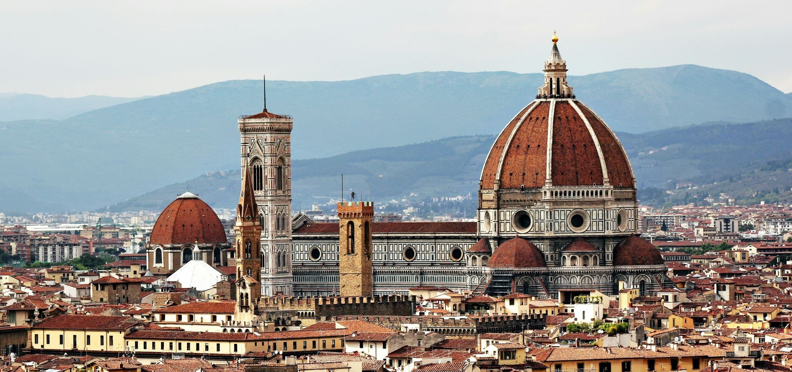

Brazzaville vous ouvre ses portes
Découvrez les merveilles
de la capitale congolaise

Brazzaville, ville aux mille facettes, vous invite à explorer son patrimoine unique. Entre architecture coloniale et modernité, la capitale congolaise offre un voyage culturel fascinant. Ses monuments historiques, ses marchés animés et ses quartiers pittoresques racontent l'histoire d'une ville en constante évolution. Laissez-vous guider à travers ses sites emblématiques, témoins de son riche passé et de son dynamisme actuel.